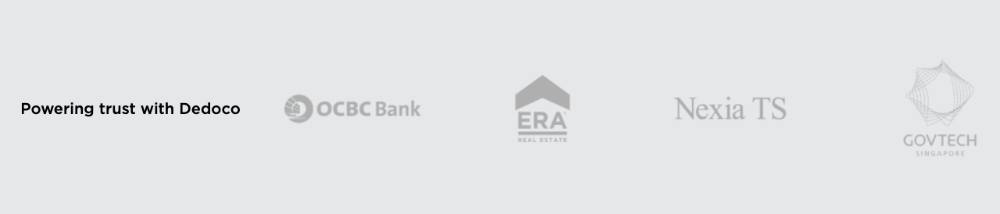

— Written 2023 —
An AI & blockchain-powered digital trust platform for business processes. The platform is capabable of providing signing,
business process integration, and real-time verification for documents processed.
MY ROLE
As Head of Product for the platform, I worked with our multidisciplinary team to take the assistant from conception to launch.
I conducted research, user interviews, managed customer onboarding, oversaw AI training & blockchain implementation, and worked
closely with the C-level team, product designer and lead engineer.
EVOLUTION OF THE PRODUCT
The original concept of the platform is to provide digital signing experience backed by the blockchain technology. We were able to
again traction from the market with a couple of large banks and Singapore governmental bodies The platform proved to be a big success
giving us full detail into the pain points for paperless signing.
After the initial success of the product, the product team continue to discover various business problems. The platform was unenjoyable
and created a poor experience with the use of old & traditional interfaces; the initial feedback mirrored this issue, and that's the
reason we undergo a large scale UI & UX Revamp of the platform. With a huge surprise to the market, the platform further strengthen the
confidence from users on the improved experience.
With the progression of serving more business process, we extend the platform's coverage from merely document signing to digital forms &
certificates issuance, which is again a validated huge demand from the Singaporean & Australian markets.
The continuous demand on protection of scams (email & sms frauds) also caught our attention at a later stage, and that's the phase we start
further progress to a more comprehensive digital trust platform.

KEY METRICS
- 45% of new user adoption across the different products of the Suite.
- Attaining at least 60% of verification rate for documents processed.
- Processes over 10K data point from blockchain, business process generated, and users.
LEARNINGS
- As one of the most recent products I've worked on, I've validated that I can work with new technologies (e.g. AI, ML, Blockchain) and grow with the product & tech teams on how to leverage these new techs to our product.
- How to build a full functional product team from scratch. This means from an IC to become a managerial role and make the team work and progress.
- How to synthesize complex information such as "Trust" into accessible formats. This further solidify the understanding of user problem by dissecting them piece by piece.
- How to keep pivoting the product we are building based on market change and working with different types of audience / users.
- How to work closely with C-levels and the leadership team to make day to day business decisions. With every single day & resource that counts in a venture-backed startup.